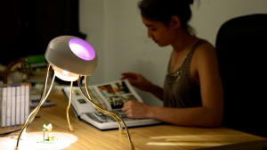
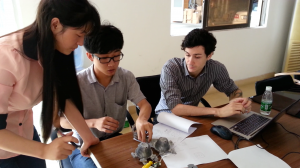

{kind=link}
 Founded and based in Montreal, Fabule is a design studio that cleverly leveraged their accelerator experience for launching a successful Kickstarter campaign to release their first product “Clyde: An Expressive Lamp for Creative Homes“, which went on to amass an impressive 149,530$ in financing, 3 times their original goal.
Founded and based in Montreal, Fabule is a design studio that cleverly leveraged their accelerator experience for launching a successful Kickstarter campaign to release their first product “Clyde: An Expressive Lamp for Creative Homes“, which went on to amass an impressive 149,530$ in financing, 3 times their original goal.
Amanda Williams, one of the brains behind such a success along with team Fabule, is going to tell us about their story.
Seeding Factory : Could you quickly brief your studio Fabule and especially Clyde ?

Amanda Williams : Fabule is composed of myself, my founding partner Bruno Nadeau, and our ninja software/web developer Angela Gabereau. We all have some background and experience in design and art, combined with technical skills in software, hardware and product development.
Clyde is our first attempt to fulfill our goal of making “expressive devices for creative homes”. It interacts with his environment in some interesting ways, and can be made to respond to touch, ambient light levels, or remote control.
S.F. : Tell us your story joining HAXLR8R in China? What kind of support did you get there ?

We heard about HAXLR8R while we were in China participating in a “Maker Carnival”. They are aimed specifically at hardware startups and really shine when it comes to helping with those specific needs. Being cooped up with other hardware geeks is really beneficial – I learned a lot from the other founders in HAXLR8R, and I hope I was helpful to them in return. (Note: HAXLR8R is an influential hardware accelerator based both in China and in San Francisco)
We received all the support that you’d typically expect from an accelerator: lots of practice pitching, help with PR and marketing, opportunities to meet press and investor and importantly, time to focus on our project to the exclusion of all other things.
They introduced us to the massive electronics markets, gave us some tips on how to shop there, also helped us develop skills in judging whether or not a manufacturer will be a good partner. Lots of North Americans have experience using sites like Alibaba to source things, but if you’re right there in China, it’s a totally different experience – the vendors perceived you as a more serious prospect, and it became much easier to get samples.
S.F.: It seems it was very impactful for you! Why did you decide to go crowdfunding?
We did get some financing from the accelerator and we received an additional research grant from the Intel Science and Technology Center for Social Computing. In total, this added up to about 36,000 USD. So research and prototyping, travel, and living expenses were covered for several months. However, we still decided to go crowdfunding for many advantages:
- Figuring that there’s a real demand for our product before we throw money at getting it made
- Attracting the sort of early adopters that make great first customers
- Great marketing! Getting onto a crowdfunding site like Kickstarter that has a big mailing list and a healthy marketing machine can kick your exposure to the public up a big notch.
- Getting backers’ feedback during the phase of product prototyping
“Kickstarter staff, your backers, your friends, journalists – you will be so pleasantly surprised by how much they want to help you succeed”
Amanda Williams
S.F. : How did you leverage the resources from HAXLR8R to run such a successful crowdfunding campaign?
 We decided and worked hard to launch our Kickstarter during our HAXLR8R Demo Day in San Francisco. We even tried to optimize the time of launch: 7AM PDT, when our friends there were just waking up, our friends on the east coast just settling in at work, British and European friends nursing a post-lunch food coma, and friends in Asia idly web-surfing before bed… or so we imagined, at least.
We decided and worked hard to launch our Kickstarter during our HAXLR8R Demo Day in San Francisco. We even tried to optimize the time of launch: 7AM PDT, when our friends there were just waking up, our friends on the east coast just settling in at work, British and European friends nursing a post-lunch food coma, and friends in Asia idly web-surfing before bed… or so we imagined, at least.
We had a really really strong first day, which got us almost 30% to our goal right away. HAXLR8R definitely gets part of the credit for this, because, frankly, they know more of the right people than we do. For that demo day, they hired a PR firm, and made sure that there would be journalists around from PandoDaily, Mashable, TechCrunch, the Financial Times, Venture Beat, etc. They also got everyone booths at Maker Faire SF, which was a great event for us to promote Clyde.
S.F. : Can you portrayed briefly the type of people who supported Clyde?
Families and friends, no doubt, and crowdfunding aficionados who frequent Kickstarter. As for what country people are from, the US is overwhelmingly in the lead, and following by Canada. Thanks, Canada!!! We were, however, a bit surprised by our relative popularity in the Netherlands, Germany, Singapore, and Scandinavia. That tells us that it might be a good idea for us to find some distributors that can put Clyde in stores in those regions.
S.F. : You have successfully reached 3 times your fundraising goal. Did you experienced some pain upscaling your initial plan ?
 The biggest mistake we’ve seen people make in hardware projects is to choose a production process that doesn’t scale. I saw this happen to a hand-crafted Kickstarter project that we checked out before starting our own, and I took notes on what not to do from that one. We decided to use injection-molding for Clyde’s enclosure, which has a high startup cost but scales up very easily.
The biggest mistake we’ve seen people make in hardware projects is to choose a production process that doesn’t scale. I saw this happen to a hand-crafted Kickstarter project that we checked out before starting our own, and I took notes on what not to do from that one. We decided to use injection-molding for Clyde’s enclosure, which has a high startup cost but scales up very easily.
In that respect, we benefited a lot from the opportunity to develop relationships with manufacturers early brought in by HAXLR8R. We thought about materials and process from the earliest stages of design, so we worked out the kinks before it got expensive and time-consuming to do so.
S.F. : After the crowdfunding success, did some investors come to you?
Yes, but we’re not 100% sure we want to pursue venture funding. The crowdfunding success gives us a little time to decide on that one.
“Definitely do lots of legwork before you launch”
Amanda Williams
S.F. : In retrospect what was your 3 best assets for running this successful campaign? What was the 3 things you will do differently?
Our #1 best asset was support from family and friends, and I include HAXLR8R as our friends. Making Clyde be awesome is not just our business now, it also reflects our debt of gratitude to the people who are helping us turn a crazy idea into a reality.
{kind=link}
#2: Work work work work work work work. We sent individually tailored emails to everyone. It’s so much more time-consuming than mass-spamming everyone you know… and so much more effective. We were tied to our computers during our campaign in order to answer backers’ questions within minutes or hours.
#3: Decent speaking skills! It’s so important to be able to gauge what aspect of our story or product they were most interested in, and articulate it in a way they can relate to, so they’d help us spread it.
What would we have done differently? Not much, but here are some things we may do differently in the future.
#1: More prep-time, never too much! This gives you more chances to work with media and generate some buzz for your project before the launch.
#2: I might try Indiegogo one of those days. Kickstarter was fantastic and I have no complaints about them whatsoever. But, I met some Indiegogo employees during the first week of our campaign, and even after I told them we were on Kickstarter they still shared great advice and were incredibly supportive.
S.F. : Anything important you’d like to share with the readers who will launch campaigns in the future?
We’ve heard horror stories about people getting screwed by Chinese manufacturers. It really helps to go there, to get to visit the factory and meet people face to face, to check the quality on their other products, to look at working conditions, to have some time to compare different places and make some careful judgments. We’re in the middle of our process right now, so it’s not too late for things to go awry… but so far our manufacturing partners have been a real pleasure.
Photo credit : Heri
Interview realized and edited by: Penelope Wan
Globally-minded, crowdfunding enthusiast, passionate about entrepreneurship and startup community building